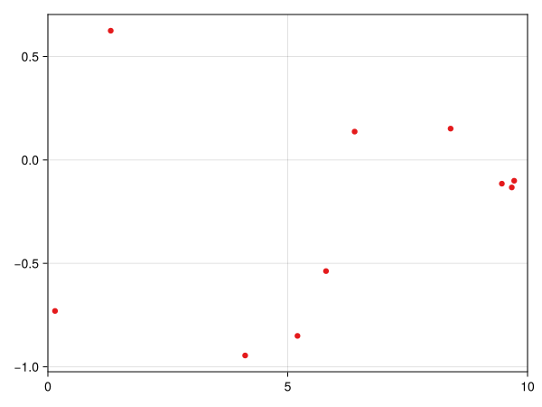
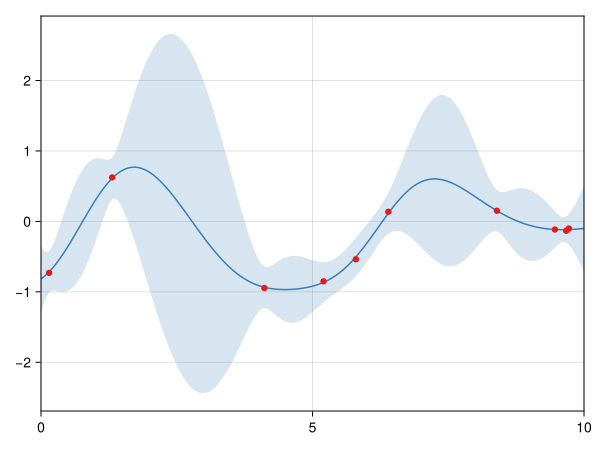
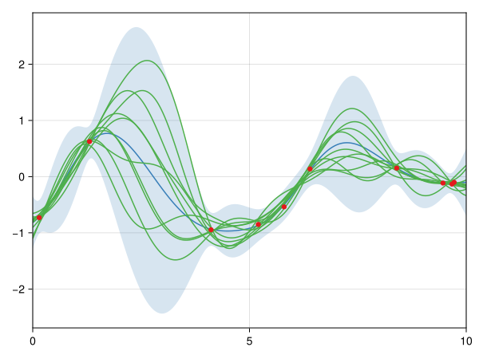

AbstractGPsMakie
Plots of Gaussian processes with AbstractGPs and Makie
Quick start
This guide shows the basic functionality of AbstractGPsMakie.
First, we load a Makie plotting backend. Here we import CairoMakie, other available backends are WGLMakie and GLMakie.
using CairoMakieWe load a custom set of colors and globally set the x-axis limits.
using CairoMakie.Makie.ColorSchemes: Set1_4
set_theme!(
palette=(color=Set1_4, patchcolor=tuple.(Set1_4, 0.2)),
Axis=(limits=((0, 10), nothing),),
)We perform a simple Gaussian process (GP) regression with AbstractGPs. We use a squared exponential kernel for our GP.
using AbstractGPs
gp = GP(SqExponentialKernel())We assume that data are observed under i.i.d. Gaussian noise with zero mean and variance 0.01. We generate some random observations.
using Random
Random.seed!(1234)
x = 10 .* rand(10)
gpx = gp(x, 0.01)
y = rand(gpx)
scatter(x, y)
We compute the posterior.
posterior_gp = posterior(gpx, y)We plot the posterior with AbstractGPsMakie. The bandscale parameter (default: 1) determines the amount of standard deviations from the mean that are highlighted in the plot.
using AbstractGPsMakie
plot(0:0.01:10, posterior_gp; bandscale=3, color=Cycled(2))
scatter!(x, y)
We add 10 samples from the posterior on top.
plot(0:0.01:10, posterior_gp; bandscale=3, color=Cycled(2))
gpsample!(0:0.01:10, posterior_gp; samples=10, color=Cycled(3))
scatter!(x, y)
We can visualize a manifold of similar samples by animating the generated samples.[PH2013]
scene = plot(0:0.01:10, posterior_gp; bandscale=3, color=Cycled(2))
samples = gpsample!(0:0.01:10, posterior_gp; samples=10, color=Cycled(3))
scatter!(x, y)
record(scene, "posterior_animation.mp4", 0:0.01:4) do x
samples.orbit[] = x
end- PH2013Philipp Hennig (2013). Animating Samples from Gaussian Distributions. Technical Report No. 8 of the Max Planck Institute for Intelligent Systems.